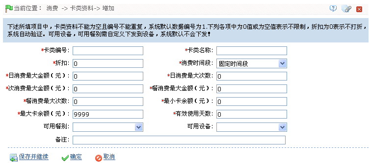

IC--8.6 卡类资料

初次使用系统时，即默认存在一个“卡类编号”为“1”、“卡类名称”为“员工卡”的卡类资料。用户可根据需要修改该卡类资料，但不可删除。
用户可以在此页面中进行新增卡类、编辑和删除卡类，以及查看日志记录等操作。
-
 新增卡类资料
新增卡类资料
 提示：操作前请仔细查看页面中的操作提示。
提示：操作前请仔细查看页面中的操作提示。
1、单击卡类资料页面上的【新增】图标，进入新增卡类资料页面：

根据需要设置各参数，具体设置方法如下：
卡类编号：输入卡类编号，不可重复。
卡类名称：输入卡类名称。
折扣：输入折扣，默认状态下为0，即不打折。可输入的折扣范围是0-99。如果输入折扣，商品价格为单价*折扣*1%。
消费时间段：设置“消费时间段”；默认状态下可用的时间段为“固定时间段”，可以选择为固定时间段或批次时间段。
日消费最大金额、日消费最大次数：默认状态下都为“0”，表示没有限制，可根据需要进行设置。
次消费最大金额：默认状态下为“0”，表示没有限制，可根据需要进行设置。
餐消费最大金额、餐消费最大次数：默认状态下都为“0”，表示没有限制，可根据需要进行设置。
 注意：餐消费最大金额必须大于次消费最大金额。
注意：餐消费最大金额必须大于次消费最大金额。
最小卡余额、最大卡余额：默认状态下为“0”，表示没有限制，可根据需要进行设置。
有效使用天数：默认状态下为“0”，代表长期有效，可根据需要进行设置。
可用餐别：默认状态下为空，表示所有餐别皆可用。可单击 按钮，在弹出餐别下拉框中，选择可用餐别（可多选）。
按钮，在弹出餐别下拉框中，选择可用餐别（可多选）。
可用设备：默认状态下为空，表示所有设备皆可用。可单击 按钮，在弹出设备下拉框中，选择可用设备（可多选）。
按钮，在弹出设备下拉框中，选择可用设备（可多选）。
 备注：默认状态下所有餐别和设备皆可用。若选择了餐别和设备，则只有被选中的餐别和设备可用。
备注：默认状态下所有餐别和设备皆可用。若选择了餐别和设备，则只有被选中的餐别和设备可用。
2、设置完成后，单击【确定】按钮（若需继续添加，则单击【保存并继续】按钮），保存并返回卡类资料页面；此时卡类资料列表中将显示刚新增的卡类资料。
（1）、若选择了可用设备，则只将该卡类资料下发到被选中的设备，若未选择设备，则将该卡类资料下发到系统中的所有消费设备中。
（2）、用户可根据单击卡类资料所在行的“相关操作”下对应的【编辑】或【删除】按钮，进入对应的编辑或删除卡类资料页面，然后进行编辑或删除卡类资料操作。具体操作方法，同编辑或删除餐厅资料一致，可参见IC--8.2.3 餐厅资料的编辑或删除餐厅资料操作。（注意：系统默认的卡类――“员工卡”，无法删除。）